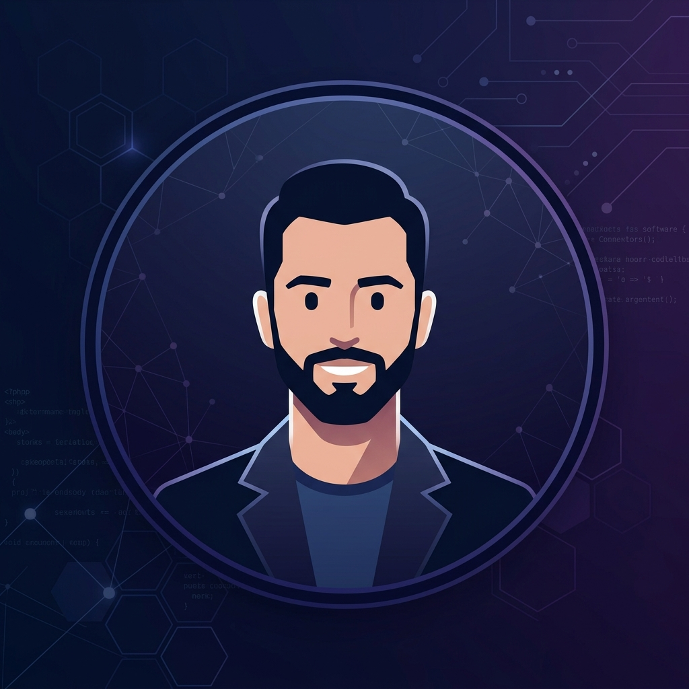

Hi, my name is
Computer Science Senior at LUMS specializing in full-stack architecture, agentic AI frameworks, real-time distributed applications, and machine learning pipelines.

I am a Computer Science senior at LUMS (BS CS '26, Minor in Mathematics) with a deep technical focus on full-stack web engineering, real-time distributed systems, machine learning, and AI agent test evaluation platforms.
Throughout my academic career at LUMS, I've served as a Teaching Assistant for 4 semesters (Calculus I, Linear Algebra, Probability), conducting office hours, mentoring 100+ students, and evaluating coursework alongside faculty members.
I thrive on building high-performance products—from agentic evaluation harnesses using multi-LLM adjudication to real-time WebRTC dating platforms, strategic multiplayer web games, and NLP classifiers for low-resource languages.
Lahore University of Management Sciences (LUMS) • 2022 – 2026
Calculus I, Linear Algebra, Probability (x2) • 2023 – 2026
DHA, Lahore Cantt, Lahore, Pakistan
interface Engineer {
name: "Muhammad Jawad";
institution: "LUMS ('26)";
major: "BS Computer Science";
minor: "Mathematics";
interests: [
"Agentic AI Systems",
"Full-Stack Web Dev",
"Real-Time WebRTC/Sockets",
"Causal ML & NLP"
];
github: "shortcut-jawad";
}Sep 2025 – Feb 2026 | LUMS
An automated LLM agent evaluation platform that ingests raw execution logs and evaluates output quality using a robust dual-judge LLM framework (Gemini + Groq) with median-vote adjudication. Features containerized sandbox execution for reproducible benchmark runs.
Sep 2025 – Dec 2025 | LUMS
Comprehensive mental wellness application featuring an interactive AI chatbot therapist, peer support forums, verified therapist directories, and voice-assisted input via Web Speech API. Built with high reliability using automated Selenium test suites and CI/CD pipelines.
Mar 2026 – May 2026
Full-stack dating & video matchmaking web app supporting instant video calls via WebRTC (with Picture-in-Picture mode), real-time WebSocket chat with image attachment sharing, geolocation discovery, and JWT-authenticated profiles.
Mar 2025 – Apr 2025 | LUMS
Real-time two-player competitive strategy board game where players claim grid cells to enclose territory. Features graph-based island-detection algorithms for automated victory declaration, live matchmaking, and WebSocket state syncing.
Sep 2024 – Dec 2024 | LUMS
Scraped and processed a multi-class Urdu news dataset from major portals. Built an end-to-end NLP pipeline utilizing UrduHack tokenization and SMOTE oversampling to tackle severe class imbalance, achieving 93% classification accuracy.
Sep 2024 – Dec 2024 | LUMS
Analyzed Pakistan's largest e-commerce sales dataset. Applied Random Forest regression, statistical hypothesis testing, and DoWhy causal inference modeling to predict demand fluctuations and quantify discount elasticity.
Pursuing Bachelor's degree with a solid foundation in computer science and mathematics. Key courses include Data Structures, Algorithms, Software Engineering, AI, Operating Systems, Database Systems, Computer Networks, Linear Algebra, Multivariable Calculus, and Probability.
I am actively seeking software engineering, full-stack, and AI development opportunities. Whether you have a project to discuss, job opportunity, or tech inquiry, feel free to drop a message!